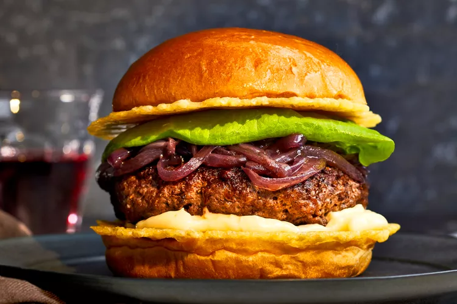

Burger

A burger is a popular and versatile sandwich typically consisting of a ground meat patty—most commonly beef—served inside a sliced bun. Often grilled or pan-fried, the patty is accompanied by a variety of toppings such as lettuce, tomato, onions, pickles, cheese, and condiments like ketchup, mustard, or mayonnaise. Burgers can be customized with additional ingredients like bacon, avocado, fried eggs, or specialty sauces, making them a favorite comfort food across the globe. Whether enjoyed at a fast-food joint or a gourmet restaurant, the burger remains an iconic and satisfying meal that appeals to a wide range of tastes.
Ingredients
-
Ground beef (or plant-based alternative)
-
Burger buns
-
Lettuce
-
Tomato
-
Onion
-
Pickles
-
Cheese (optional)
Steps
-
Preheat the grill or stovetop pan over medium-high heat.
-
Form the ground beef into patties, about 1 inch thick. Season with salt and pepper.
-
Cook the patties for about 3-4 minutes on each side for medium doneness, or until they reach your desired level of doneness.
-
If using cheese, add a slice on top of each patty during the last minute of cooking to melt.
-
Toast the burger buns on the grill or in a toaster.
-
Assemble the burgers by placing the cooked patty on the bottom bun, then adding lettuce, tomato, onion, pickles, and any other desired toppings.
-
Top with the other half of the bun and serve immediately.
Home